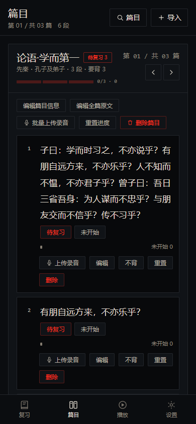
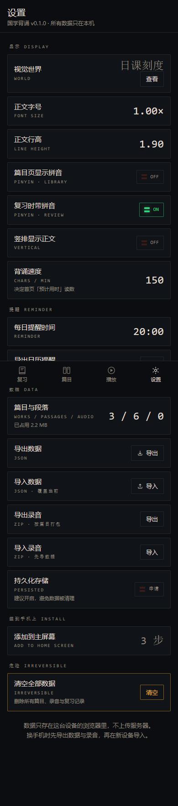

左边是按你选的「卡片盒，但不要叠层，只显示当前篇目」重做的篇目页；右边是按「导视带」重做的设置页。 两张都是 390×844 的真机尺寸截图，内容用的是示例数据（三篇、六段）。

第 01 / 共 03 篇 读数 + 前后翻篇键0/3 · 0?work=…），每一篇都能深链
1.00×、1.90、150、20:00）ON，关闭＝熄灭 + OFF3 / 6 / 0（篇 / 段 / 录音）与实际占用IRREVERSIBLE